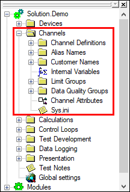
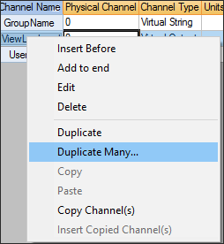
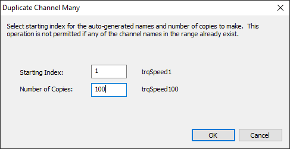
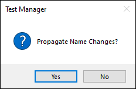
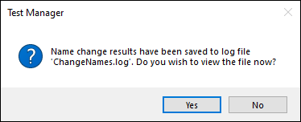
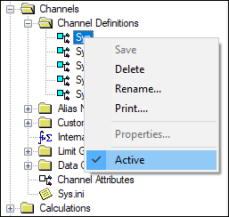
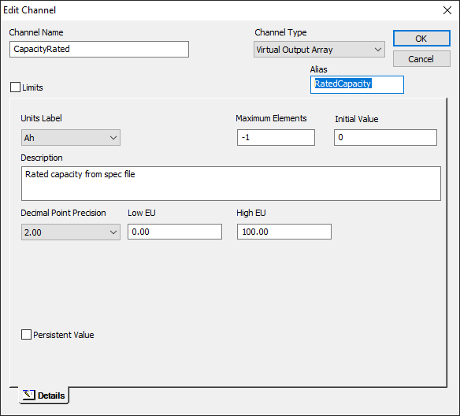
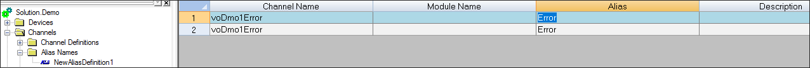
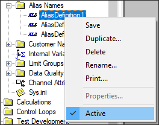
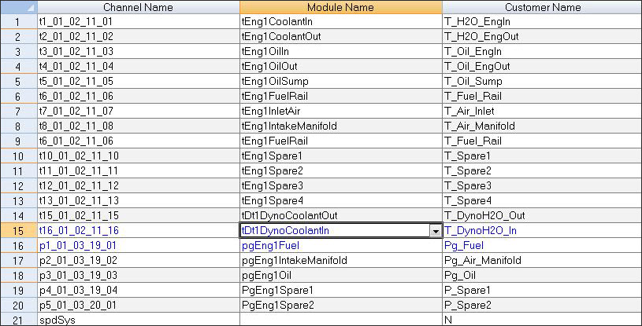

iTest User's Guide
In Test Manager, you can manage channel definition files and channel names using their respective nodes. To access the various editors, expand the Channels node in Test Manager.
Channels Node

Channels are stored in channel definition files. These files are flat, tab delimited ASCII files that use the .fil extension and are displayed in a spreadsheet editor. Each row represents a channel, and each column represents a unique attribute or field for that channel. Column field entries can support numeric values, text, channel names, and simple expressions. Support of these entries is dependent on the column type (e.g., the Physical Channel column only supports numeric values). For more information about iTest channels, refer to the iTest Channels documentation.
Channels can be managed in SolutionBuilder or Test Manager and are stored in the $SUPPORTDIR\DB folder. The following sections detail how to manage channels in Test Manager.
When you create a new channel definition file, you must also add channels, define channel properties, and assign unique attributes to the channel. The following section outlines this process.
To create a channel definition file, do the following:


 |
NOTE: | Each channel type has unique column headers. If you have a file with multiple channel types, the column headers will change when you select the channel row. |
As your channel definition files grow larger and more complicated, you can save time by duplicating a channel into many different channels. To duplicate a channel in Test Manager, right-click a channel and select the option Duplicate Many. This feature duplicates the channel into the number of copies specified and assigns each a unique channel name. A maximum of 1,000 channels can be added at one time. This feature is only supported for Virtual Output channels.
Duplicate Many

Duplicate Many Dialog

Channels can be renamed by editing the Channel Name field in the Edit Channel dialog. After saving your changes, a dialog displays prompting you to propagate the channel name changes. Click Yes to propagate the name changes; click No to close the dialog.
Propagate Name Changes

When you propagate the channel name changes, the ChangeNames.log is saved with the name change results. A dialog displays with the option to view the ChangeNames.log file immediately or at a later time.
View ChangeNames.log

The following table describes the possible actions you can perform when you right-click within the Channel Definition File editor:
Right-Click Descriptions
| Action | Description |
| Insert Before | Displays the New Channel dialog prompting you to create a new channel. After you have specified the details of the channel, the new channel is inserted before the selected channel. |
| Add to End | Displays the New Channel dialog prompting you to create a new channel. After you have specified the details of the channel, the new channel is added to the end of the channel list. |
| Edit | Enables you to edit the selected channel using the Edit Channel dialog. |
| Delete | Deletes the selected channel row from the editor. |
| Duplicate | Duplicates the selected channel. This displays the New Channel dialog with the configurations kept from the duplicated channel. |
| Duplicate Many | Displays the Duplicate Channel Many dialog. You can use this option to create multiple duplicates of the selected channel by indicating a starting index and the number of copies to make. A maximum of 1,000 channels can be duplicated. This feature is only applicable for Virtual Output channels. |
| Copy | Copies the value in a cell. |
| Paste | Pastes the copied value into a new cell. |
| Copy Channel (s) | Copies the selected channel. |
| Insert Copied Channel(s) | Inserts a new version of the copied channel(s) and provides it a unique name. |
Channel definition files can be activated or deactivated, as necessary. To do this, right-click on a channel definition file node in the Test Manager tree bar and select/deselect the Active option. When "inactive," the channels contained in the channel definition file will not be loaded into the RDB at start-up.
Activating and Deactivating Channel Definition Files

Each channel in iTest can have up to three names and an optional label. The channel name is its primary name; there are also alias names, customer names, and module names. The primary channel name is the name as defined in the channel definition file. The same channel can be referenced by its other names, depending upon the configuration of the solution you are running.
The alias name is a label that can be used in displays and other parts of the iTest interface. The alias name can only contain local language characters and the space character. Aliases can be used for display objects, data logging, the channel select dialog, and on some Test Manager editors. The alias string can be set in the channel definition editor, the Edit Channel dialog, or in the various alias names editors.
Use of an alias name is not supported in many places, when it is a functional component. E.g., aliases cannot be used as either a Parameter or an Operand in a Step Task. BTS systems are the exception to this.
Edit Channel Dialog

You can create separate alias files and activate or deactivate them from Test Manager. This is useful because it enables you to have different sets of alias files depending on your own external customer or testing requirements. The stand-alone alias files are located in the Test Manager navigation tree Channels > Alias Names. The view is the same as the Customer Name editor, however, unlike customer names duplicate alias names are permitted.
Alias Names

To create a new Alias Name file, do the following:
|
NOTE: | You cannot edit the Module Name or the Description columns. |
Alias filenames are loaded upon iTest initialization. Any alias names specified in the alias files override the values stored in the channel definition files. When loading alias names from files, the last loaded name will override any previously loaded names.
The following table describes the possible actions you can perform when you right-click within the Alias Names editor:
Right-Click Descriptions
| Action | Description |
| Insert Before | Adds a new row before the selected alias name row. |
| Add to End | Adds a new row to the end of the alias name list. |
| Delete | Deletes the selected alias name. |
| Move Up | Moves the selected alias name up within the list. |
| Move Down | Moves the selected alias name down within the list. |
| Copy | Copies the value in a cell. |
| Paste | Pastes the copied value into a new cell. |
Alias files can be activated or inactivated, as necessary. You can activate or deactivate these files by right-clicking an alias file name in the Test Manager tree bar and selecting or deselecting the Active option.
Activating and Deactivating Alias Files

Each channel can also be assigned to a customer name. Customer names are not stored in the channel definition files. They are applied via an external file called an .aka file. Each row of the customer name file contains the channel name and the customer name that the channel will be assigned to. This enables channel referencing with multiple names throughout iTest and allows channels to be mapped to different I/O values depending on the hardware that is installed. The customer name editor is displayed below:
Custom Name Editor

Customer names utilize the same rules as channel names including length, character set, etc. There should not be any duplicate customer names in the system. If there are, the first channel which gets the customer name in a given file will have that name.
|
NOTE: | For advanced usage of customer names, refer to the document Dynamic Customer Names. |
To create a new Customer Name file, do the following:
|
NOTE: | You cannot edit the Module Name or the Description columns. |
The following table describes the possible actions you can perform when you right-click within the Customer Names editor:
Right-Click Descriptions
| Action | Description |
| Insert Before | Adds a new row before the selected customer name row. |
| Add to End | Adds a new row to the end of the customer names list. |
| Delete | Deletes the selected customer name. |
| Move Up | Moves the selected customer name up within the list. |
| Move Down | Moves the selected customer name down within the list. |
| Copy | Copies the value in a cell. |
| Paste | Pastes the copied value into a new cell. |
| Update VCL Ref | Updates the VCL references using the customer names. |
Module channels are channels that were created for specific modules. The module name is an advanced concept and may only be necessary to understand if you are troubleshooting and need to trace back to some logic in a module, or are developing a module yourself. Module channels can reference other iTest channels that have been mapped with channel assignments. When channels are mapped, a module name can be used to refer to the same value in the RDB as a channel name. This concept is only relevant for modular solutions, for more information regarding this feature refer to the Modules documentation.